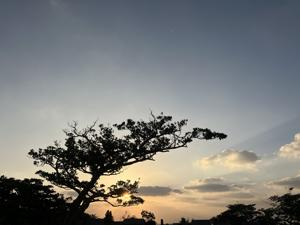
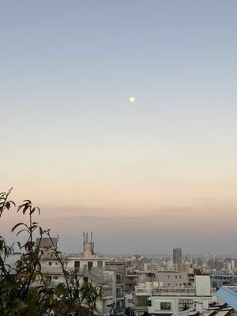

うるがいの話 ある日
最新: 網戸張替え【うるがいの話 ある日】とは 一日だけのプログです
『うるがいの話』の最新一日だけのプログで、通信料が少なく経済的だ。カニの画像をクリックすると全ての日付が載る『うるがいの話』サイトを表示します
|
|
【うるがいの話】 うるがい(ｳﾙｶﾞｲ urugai)とは、『もずくがに』の名前でとても大きくなります。 |
|---|---|
|
|
【カミマヤーの話】 猫のことを方言でマヤーといいます。カミマヤー（kamimayaa）とは、神の猫のことです。 |
|
【たながぁの音楽】 たながぁ（ﾀﾅｶﾞｰ tanagaa）とは手長えびのことで、何種類かあり大きいのは車 エビぐらいになります。 |

|
【ぶながぁの話】 ぶながぁ(ﾌﾞﾅｶﾞｰ bunagaa)とは、赤い髪の毛、赤い身体、そして身長は１ｍ２０ｃｍ ぐらい、川の蟹を食べているの目撃された。場所は沖縄県国頭郡大宜味村のと ある村僕の隣近所に住んでいる爺さんから、聞いた話です。 |
|
|
【ギーマの話】 ギーマ(giima)とは、山原の里山に咲くスズランに似た、 花を付けます。実は食べられます、 気が付くと口の周りが紫になっています。 |
2023年11月29日 (水）網戸張替え
15:53

工事が終了し、壁が綺麗になったので雨戸が、ボロボロになっているのが目立
つ。さて、網戸張替えをスルベとメイクマンへ行く。張り替える雨戸をまず計
り売りで買う、そして網戸ローラー、３１０円と１，１００円の物がある。店
員さんは、千円のものがイイヨと勧めるが、以前張り替えた時、確か３１０円
のものだった、確か家にあったはず。そして、網戸固定用のゴムも計り売りで
買うと店員さんにコレをお願いしますと言うと、種類がいくつかあるので今の
切れ端でも持って比較した上で買うほうがいいですよと言われ、網戸だけ購入
し出直す事にした。家の押入れをゴソゴソすると、なんと３１０円の網戸ロー
ラーがあった。取りあえず、張り替える雨戸の網を外すとするかと、網戸固定
用のゴムを外す。ン？、このゴムまた使えるジャン。メイクマンへ、行かなく
て済む。雨戸が汚いので、洗浄する。この段階で疲れてしまう、残りは明日に
繰越すことにした。押入れをゴソゴソしていると、ナハマラソンで利用したま
だ履けるシューズが見つかった、ラッキー！。写真は西の空の満月。

１５時３９分 ビットコインの総資産 ￥１６、２５８（↑３４１）